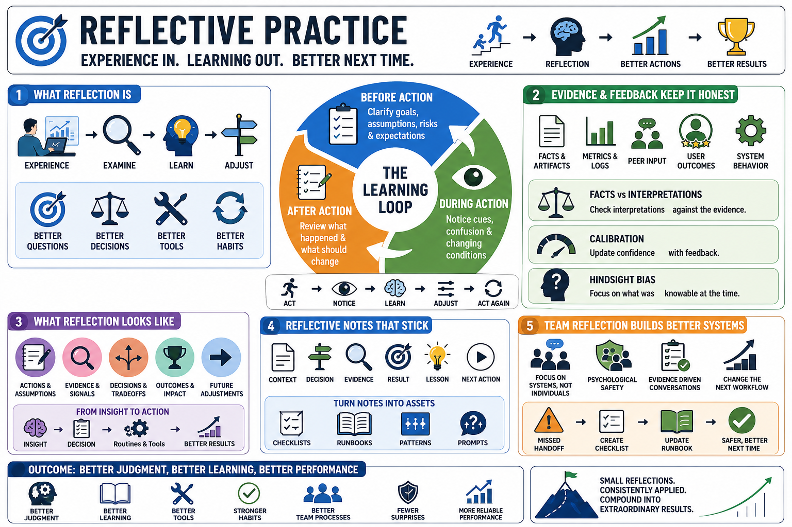

Course Summary and Key Takeaways
Connecting to LMS... Progress: in progress

Narration
Reflective practice helps people learn from experience by examining actions, assumptions, evidence, outcomes, and future adjustments. It is structured, specific, and connected to changed behavior. Experience supplies the material, but reflection turns that material into better questions, better decisions, better tools, and better habits.
Strong reflection happens before, during, and after action. Before action, it clarifies goals, assumptions, risks, and expectations. During action, it helps people notice confusion and changing conditions. After action, it reviews what happened and what should change. Together, these moments create a learning loop that supports action instead of delaying it.
Evidence and feedback keep reflection honest. Facts, artifacts, metrics, peer input, user outcomes, and system behavior help separate what happened from what we think it means. Calibration improves when confidence is updated by evidence. Hindsight bias is reduced when people ask what was knowable at the time, not only what seems obvious afterward.
The goal is not endless introspection. The goal is better judgment, better learning, better systems, and more reliable performance over time. Reflective practice works best when it produces reusable notes, clearer decisions, stronger routines, improved team processes, and specific adjustments that make the next attempt better than the last. Used this way, reflection becomes a quiet engineering habit: short enough to sustain, honest enough to matter, and practical enough to change what happens next.